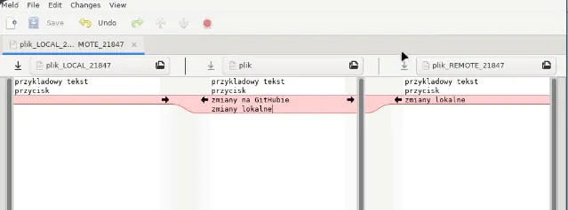

When collaborating on a project, it's essential to keep your local repository updated with changes made by others in the team. Git provides powerful commands to facilitate this process.
To keep your local repository up to date with the remote repository, you can use the following Git commands:
I. Fetch:
The git fetch command downloads the latest changes from the remote repository without integrating them into your local branch. This allows you to review the changes before deciding to merge them.
git fetchII. Pull:
The git pull command combines fetch and merge in a single step. It downloads the changes and immediately merges them into your current branch. This is useful when you want to update your branch quickly.
git pullIII. Pull with Rebase:
Sometimes, you might want to linearize the commit history by placing your changes atop those from the remote repository. This can be achieved using the git pull --rebase command. Rebase replays your local commits on top of the fetched changes, maintaining a cleaner project history.
git pull --rebase| Action | Fetch | Pull |
|---|---|---|
| Purpose | Downloads updates from the remote but leaves your local branch untouched. | Directly integrates the fetched changes into your current branch. |
| Provides flexibility as you decide when to integrate those changes. | Essentially a combination of fetch and merge. |
After fetching, if you decide to integrate the changes, you can either:
Use the merge command:
git fetch
git mergeOr, if you want to override local changes to match the state of the remote branch, employ:
git fetch
git reset --hard origin/branch_nameNote: Ensure any pending work is committed before using reset to avoid potential data loss.
Suppose you've been developing a new feature on a branch called feature_branch. Once you're ready to integrate this feature with the master branch, follow these steps:
master branch:git checkout mastergit pull origin mastergit merge feature_branchWhen it comes to integrating changes from one branch into another, Git offers two primary strategies:
| Aspect | Merging | Rebasing |
|---|---|---|
| Process | Combines changes into a new commit | Moves commit history onto target branch |
| Commit History | Retains individual commit history of both branches | Provides a cleaner, linear commit history |
| Collaboration | Creates a unique commit referencing merged branches | Rewrites history, potential collaboration issues |
Master Branch: Feature Branch:
+---------------------------+ +---------------------------+
| | | |
| some code... | | some code... |
| | | |
| ++++++++++++ | | ++++++++++++ |
| | | |
| the conflicting line | | the alternate line |
| | | |
| ++++++++++++ | | ++++++++++++ |
| | | |
| more code... | | more code... |
| | | |
+---------------------------+ +---------------------------+
Attempt to Merge:
+-------------------------------------+
| |
| some code... |
| |
| <<<<<<< HEAD |
| the conflicting line |
| ======= |
| the alternate line |
| >>>>>>> feature-branch |
| |
| more code... |
| |
+-------------------------------------+If you encounter merge conflicts:
I. Begin by reviewing the terminal's advice. Git often provides context about the nature and location of the conflict.
II. Use the git diff command to inspect the differences and identify the conflicting areas.
III. Edit the affected files manually to resolve the conflicts, making sure the desired code remains while removing Git's conflict markers (<<<<<<<, =======, >>>>>>>).
IV. Once resolved, stage the changes with git add filename.
V. If you were in the middle of a rebase, continue the process with:
git rebase --continueVI. Otherwise, if you were merging, finalize with a commit.
VII. Repeat the process until all conflicts are addressed.
To list available tools:
git mergetool --tool-helpPopular merge tools include:
Switching to another tool, e.g., meld:
git config --global merge.tool meldTo use mergetool when a conflict arises:
git mergetoolThis displays a three-panel view for each conflicted file:

Make resolutions in the center panel, save, and exit the editor.
After using mergetool, you might notice .orig files. These backups are created during conflict resolution.
To remove these backups:
git clean -iTo prevent creation of these backup files in future:
git config --global mergetool.keepBackup falseRemember, understanding the context of the changes and frequent communication with collaborators can significantly reduce the likelihood and complexity of merge conflicts.
To push local branch changes to the remote repository:
git push origin branch_nameEnsure you replace branch_name with the actual name of your branch.
Note: This will work if the remote branch has no new commits since you last synchronized. If there are newer commits, you'd have to first merge or rebase with the remote branch.
For pushing a new branch and setting up tracking:
git push -u origin branch_nameThis not only creates the branch remotely but also establishes a tracking relationship.
Force Pushing: Sometimes, you may need to forcefully push changes, overriding any conflicting changes on the remote. This can be done using:
git push --force origin branch_nameWarning: Use --force carefully, as it can discard remote changes and lead to data loss.
Safer alternative: --force-with-lease checks that the remote branch hasn’t been updated since your last fetch. If someone else pushed in the meantime, the push is rejected:
git push --force-with-lease origin branch_nameThis is strongly recommended over --force for any branch others might work on.
Over time, branches deleted on the remote still show up locally. Prune them:
# Remove stale remote-tracking branches
git fetch --prune
# Or set it as the default for all fetches
git config --global fetch.prune true
# See which remote branches are gone
git branch -vv | grep ': gone]'When working with forked repositories, it's common to want to synchronize your fork with the original (or "upstream") repository to ensure that your fork remains up-to-date with the latest changes. Here’s a detailed guide on how to keep your forked repository synchronized with the upstream repository:
I. Adding the Upstream Repository
The first step is to add the original repository, from which you forked your project, as an upstream remote repository. This is done so you can fetch changes from the original repository to keep your fork updated.
git remote add upstream original_repo_urlReplace original_repo_url with the URL of the original repository.
II. Fetching Changes from the Upstream Repository
Fetching retrieves the latest changes from the upstream repository. This does not apply any changes to your working directory or your fork, but it updates your local copy of the upstream repository's branches.
git fetch upstreamIII. Merging Changes from Upstream
After fetching the updates from the upstream repository, the next step is to merge those updates into your current branch. This applies the changes from the upstream repository’s default branch to your current branch.
git merge upstream/mainReplace main with the upstream’s actual default branch name if it differs (e.g., master).
You may need to resolve any merge conflicts that arise during this step.
IV. Pushing Merged Changes to Your Remote Fork
Once you have successfully merged the changes, you need to push these changes to your forked repository on GitHub (or any other remote repository service). This ensures that your fork on the remote server is up-to-date with the upstream repository.
git push origin branch_nameReplace branch_name with the name of the branch you are working on (e.g., main, master, development).
V. Fetch and Merge in a Single Step
Alternatively, you can fetch and merge the upstream repository’s default branch into your current branch in a single step using the git pull command. This command is a shorthand for git fetch followed by git merge.
git pull upstream mainReplace main with the upstream’s actual default branch name if it differs. This method combines the fetch and merge operations, making it quicker and easier to synchronize your fork with the upstream repository.
GitHub shortcut: Since 2021, GitHub provides a "Sync fork" button on your fork’s page that handles upstream synchronization automatically through the web UI, without needing command-line steps.